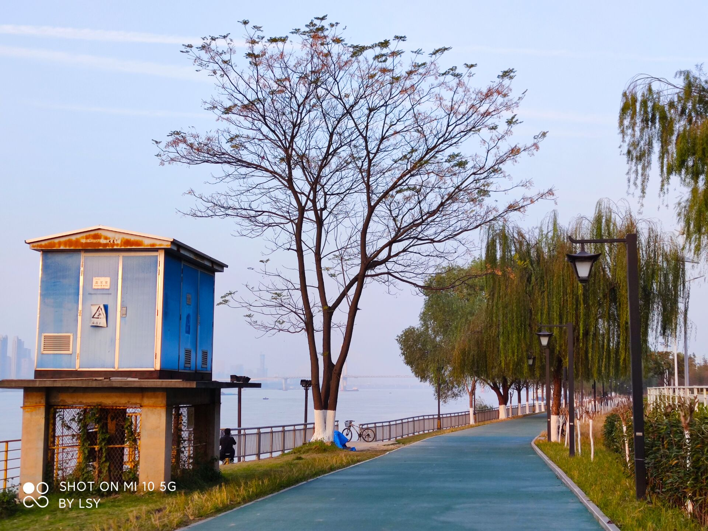

灵感记录

这张照片拍摄于初冬的一个午后，此时太阳并未完全落下，漫步于长江的江滩上，夕阳的晖光照射在江边小道上，显得静谧而安详。忽遇到一处拐角，路边的变压器在阳光的照射下染上了一层金色的光晕，格外吸引人的眼球。后方一颗叶片即将落尽的槐树独立在江边，与旁边枝条依旧翠绿的垂柳形成鲜明的对比，使人不禁想到大自然季节的更替与生命的轮回，漫步于如此静谧的场景中，顿时感到心中的压力顿消，剩下的，只有无尽的宁静与放松，仿佛这世界上所有的烦恼都与我无关，我只是这江边一个普通的路人，而我所要做的，便也只剩下独自享用这一份平静和美好。
评论
作者的摄影作品非常精彩，构思极其巧妙，角度独出心裁，光线的变换恰到好处，很好地将生活中的美展现了出来，希望继续拍摄出更优秀的作品！
看我发现了什么宝藏网站！这个博主拍摄的照片真的很有意境，强烈向身边的朋友安利一波，希望更新越来越多精彩的作品。